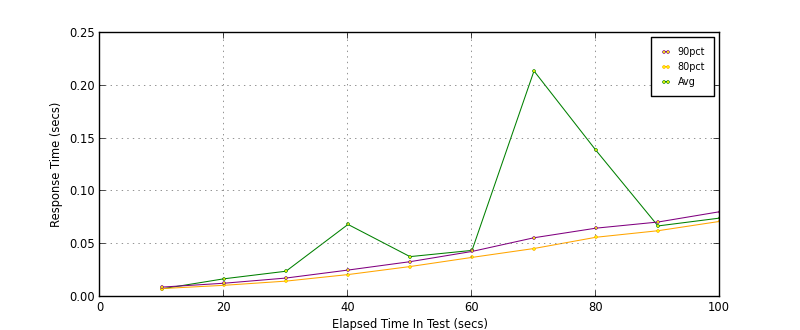
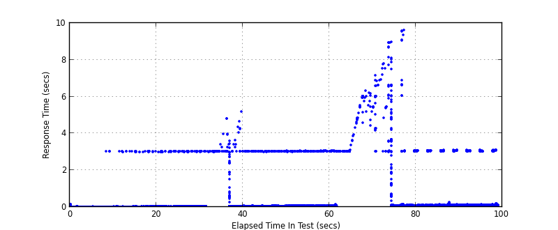
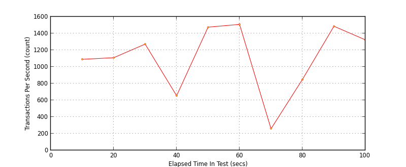
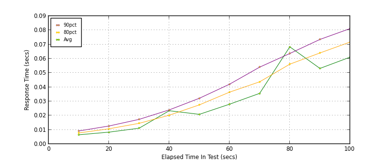
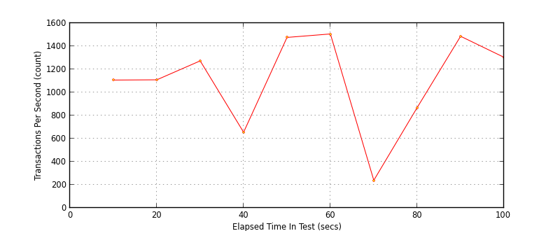

Performance Results Report
Summary
transactions: 110424
errors: 833
run time: 100 secs
rampup: 100 secs
test start: 2016-12-08 10:01:25
test finish: 2016-12-08 10:03:04
time-series interval: 10 secs
workload configuration:
| group name | threads | script name |
|---|
| user_group-1 | 20 | v_post.py |
| user_group-2 | 20 | v_post.py |
| user_group-3 | 20 | v_post.py |
| user_group-4 | 20 | v_post.py |
| user_group-5 | 20 | v_post.py |
| user_group-6 | 20 | v_post.py |
All Transactions
Transaction Response Summary (secs)
| count | min | avg | 80pct | 90pct | 95pct | max | stdev |
|---|
| 110424 | 0.004 | 0.054 | 0.049 | 0.060 | 0.071 | 9.632 | 0.320 |
Interval Details (secs)
| interval | count | rate | min | avg | 80pct | 90pct | 95pct | max | stdev |
|---|
| 1 | 10904 | 1090.40 | 0.004 | 0.008 | 0.008 | 0.009 | 0.010 | 3.021 | 0.058 |
| 2 | 11091 | 1109.10 | 0.004 | 0.017 | 0.011 | 0.013 | 0.015 | 3.032 | 0.161 |
| 3 | 12726 | 1272.60 | 0.004 | 0.024 | 0.015 | 0.018 | 0.021 | 3.031 | 0.197 |
| 4 | 6546 | 654.60 | 0.005 | 0.069 | 0.021 | 0.026 | 0.030 | 5.193 | 0.404 |
| 5 | 14755 | 1475.50 | 0.005 | 0.038 | 0.029 | 0.033 | 0.038 | 3.046 | 0.222 |
| 6 | 15087 | 1508.70 | 0.005 | 0.044 | 0.038 | 0.043 | 0.048 | 3.060 | 0.214 |
| 7 | 2588 | 258.80 | 0.006 | 0.214 | 0.046 | 0.056 | 0.082 | 6.312 | 0.885 |
| 8 | 8507 | 850.70 | 0.007 | 0.139 | 0.057 | 0.065 | 0.075 | 9.632 | 0.721 |
| 9 | 14864 | 1486.40 | 0.009 | 0.067 | 0.063 | 0.071 | 0.079 | 3.112 | 0.218 |
| 10 | 13236 | 1323.60 | 0.009 | 0.075 | 0.072 | 0.081 | 0.090 | 3.123 | 0.222 |
Graphs
Response Time: 10 sec time-series

Response Time: raw data (all points)

Throughput: 5 sec time-series

Custom Timer: POST
Timer Summary (secs)
| count | min | avg | 80pct | 90pct | 95pct | max | stdev |
|---|
| 110287 | 0.004 | 0.031 | 0.050 | 0.062 | 0.071 | 8.100 | 0.104 |
Interval Details (secs)
| interval | count | rate | min | avg | 80pct | 90pct | 95pct | max | stdev |
|---|
| 1 | 11072 | 1107.20 | 0.004 | 0.006 | 0.008 | 0.009 | 0.010 | 0.151 | 0.004 |
| 2 | 11090 | 1109.00 | 0.004 | 0.008 | 0.011 | 0.013 | 0.014 | 0.056 | 0.003 |
| 3 | 12738 | 1273.80 | 0.004 | 0.011 | 0.015 | 0.017 | 0.020 | 0.047 | 0.005 |
| 4 | 6557 | 655.70 | 0.005 | 0.023 | 0.020 | 0.024 | 0.028 | 3.606 | 0.138 |
| 5 | 14769 | 1476.90 | 0.005 | 0.021 | 0.028 | 0.032 | 0.037 | 0.081 | 0.009 |
| 6 | 15067 | 1506.70 | 0.005 | 0.028 | 0.036 | 0.042 | 0.047 | 0.120 | 0.011 |
| 7 | 2398 | 239.80 | 0.006 | 0.036 | 0.044 | 0.054 | 0.072 | 0.151 | 0.016 |
| 8 | 8691 | 869.10 | 0.010 | 0.068 | 0.056 | 0.064 | 0.073 | 8.100 | 0.339 |
| 9 | 14865 | 1486.50 | 0.010 | 0.053 | 0.064 | 0.074 | 0.082 | 0.211 | 0.016 |
| 10 | 13040 | 1304.00 | 0.017 | 0.061 | 0.072 | 0.081 | 0.085 | 0.117 | 0.014 |
Graphs
Response Time: 10 sec time-series

Response Time: raw data (all points)

Throughput: 10 sec time-series
